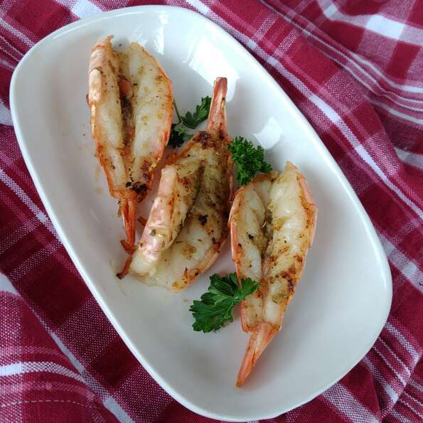

Easy Meatloaf

Very simple Scampi, but very sweet and tasty.
Per Serving: 154 calories; protein 3.8g; carbohydrates 1g; fat 15.2g; cholesterol 57.1mg; sodium 108.2mg.
Ingredients
- 10 large shrimp, heads off and unpeeled
- 1 tablespoon olive oil
- 3 cloves garlic, minced
- 4 tablespoons butter
- 1 teaspoon dried oregano
- With a sharp knife, cut shrimp in half so that the meat is exposed in the shell.
- In a small saucepan, heat olive oil and lightly fry the garlic until just softened. Add butter and Oregano. Heat until butter has melted.
- Preheat an outdoor grill for medium heat and lightly oil grate.
- Lay shrimp out on a tray and brush generously with the butter mixture. Grill shrimp until lightly golden.